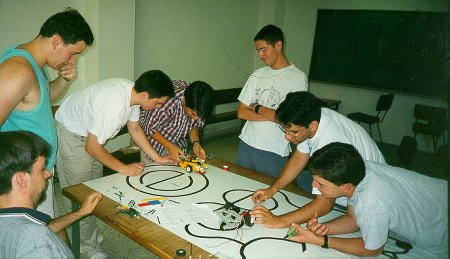

A principios de Julio de 1999, recien acabados los exámenes de Junio, el club organizó un curso de una semana de
duración orientado a la fabricación de un pequeño microrrobot. El curso tuvo un gran aceptación y tuvo lugar en el
local que el club tenía en la antigua ubicación de la ETSI de Informática de la UAM en el módulo IV de la Escuela
Universitaria de Profesorado Santa María.

En primer lugar impartimos unas lecciones sobre programación y sobre el lenguaje ensamblador del
microcontrolador 68hc11 de Motorola. Al día siguiente explicamos la electrónica del robot así como el
funcionamiento y modificación de servomotores. En esta imagen podemos ver varios participantes del curso
elaborando la etapa de potencia. Se aprecia además en la imagen los dos ordenadores que utilizabamos
para programar los microcontroladores y depurar los programas.
En esta imagen vemos a uno de los grupos tras haber construido su microrrobot. La mesa que aparece en la imagen,
preparada con ocasión del primer concurso de microrrobots de Madrid que tuvo lugar en 1998 en la ETSI de
Informática de la UAM, se utilizó para probar los robots desarrollados durante el curso.
Ya en funcionamiento sobre el circuito los integrantes del grupo estan muy pendientes de que el robot siga la
línea negra del trazado del circuito.

Los integrantes de otro grupo ponen a prueba su creación en el circuito de Sumo. Mientras tanto se hace sentir
el espíritu de colaboración presente a lo largo de todo el curso, puesto que los demás participantes opinan sobre
el funcionamiento del robot al tiempo que sugieren posibles mejoras.
En definitiva el curso fue un éxito y sus integrantes mostraron gran satisfacción por el mismo. Basta decir que
hasta nos ayudó a quitar gran parte de la inquietud de estar pendientes de las notas de los exámenes de Junio :)